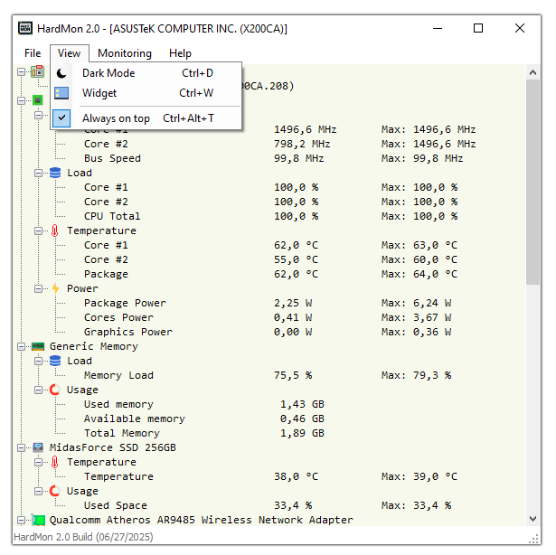

Monitor your hardware in real-time with clear insights into CPU, GPU, RAM, and storage performance.
HardMon is a lightweight hardware monitoring tool designed to provide real-time insights into your system's performance without overwhelming you with data. It focuses on key components — such as CPU, GPU, memory, and storage — giving you essential metrics to help understand how your system is running.
Whether you're keeping an eye on CPU temperatures, GPU load, memory usage, or disk activity, HardMon makes it easy to stay informed. The data is updated in real-time, allowing you to track system behavior instantly, whether you're working, gaming, or benchmarking.
The interface is clean and simple, ideal for beginners and advanced users alike. You can monitor core clock speeds, power draw, and temperatures for your CPU and GPU, while also checking memory and storage usage levels without navigating through complex settings or menus.
If you're new to hardware monitoring or just want a minimal, focused tool to check your system's health, HardMon is the right utility to help you stay informed without distraction.
Track CPU, GPU, memory, and storage usage live as you work or play.
Designed to use minimal system resources and deliver smooth performance.
View temperatures, clock speeds, power consumption, and usage levels in one place.
